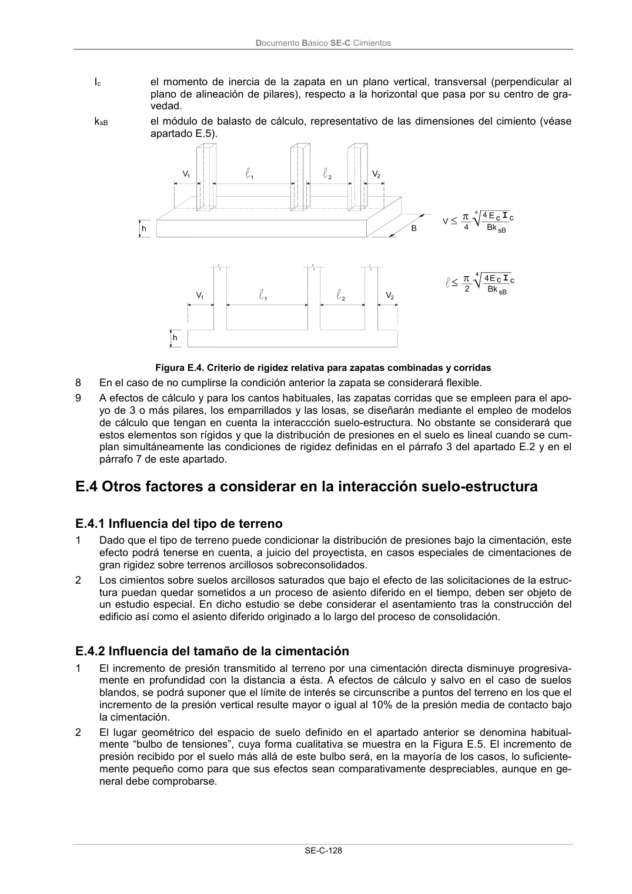

DB-SE-C · Página 133 · versión 2019-12-20
SHA256: a71133f4b0dca253e45ea3071c70f2a512354bcc5cd841bf89b1a502f567ac5e · página física 133 de 165 · métodos de encabezado
solo si están cotejados.
Documento · ← p. 132 · p. 134 →
Formatos: Markdown · JSON de bloques · PDF p. 133 · imagen PNG
Documento Básico SE-C Cimientos SE-C-128 Ic el momento de inercia de la zapata en un plano vertical, transversal (perpendicular al plano de alineación de pilares), respecto a la horizontal que pasa por su centro de gra- vedad. ksB el módulo de balasto de cálculo, representativo de las dimensiones del cimiento (véase apartado E.5). Figura E.4. Criterio de rigidez relativa para zapatas combinadas y corridas 8 En el caso de no cumplirse la condición anterior la zapata se considerará flexible. 9 A efectos de cálculo y para los cantos habituales, las zapatas corridas que se empleen para el apo- yo de 3 o más pilares, los emparrillados y las losas, se diseñarán mediante el empleo de modelos de cálculo que tengan en cuenta la interaccción suelo-estructura. No obstante se considerará que estos elementos son rígidos y que la distribución de presiones en el suelo es lineal cuando se cum- plan simultáneamente las condiciones de rigidez definidas en el párrafo 3 del apartado E.2 y en el párrafo 7 de este apartado. E.4 Otros factores a considerar en la interacción suelo-estructura E.4.1 Influencia del tipo de terreno 1 Dado que el tipo de terreno puede condicionar la distribución de presiones bajo la cimentación, este efecto podrá tenerse en cuenta, a juicio del proyectista, en casos especiales de cimentaciones de gran rigidez sobre terrenos arcillosos sobreconsolidados. 2 Los cimientos sobre suelos arcillosos saturados que bajo el efecto de las solicitaciones de la estruc- tura puedan quedar sometidos a un proceso de asiento diferido en el tiempo, deben ser objeto de un estudio especial. En dicho estudio se debe considerar el asentamiento tras la construcción del edificio así como el asiento diferido originado a lo largo del proceso de consolidación. E.4.2 Influencia del tamaño de la cimentación 1 El incremento de presión transmitido al terreno por una cimentación directa disminuye progresiva- mente en profundidad con la distancia a ésta. A efectos de cálculo y salvo en el caso de suelos blandos, se podrá suponer que el límite de interés se circunscribe a puntos del terreno en los que el incremento de la presión vertical resulte mayor o igual al 10% de la presión media de contacto bajo la cimentación. 2 El lugar geométrico del espacio de suelo definido en el apartado anterior se denomina habitual- mente “bulbo de tensiones”, cuya forma cualitativa se muestra en la Figura E.5. El incremento de presión recibido por el suelo más allá de este bulbo será, en la mayoría de los casos, lo suficiente- mente pequeño como para que sus efectos sean comparativamente despreciables, aunque en ge- neral debe comprobarse.
